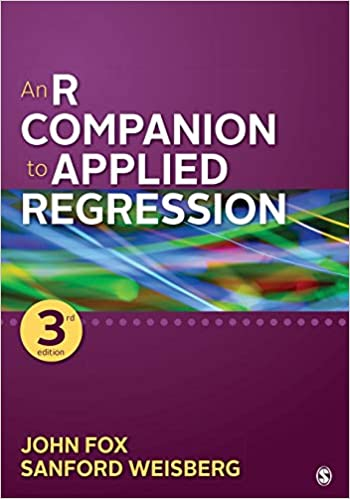

Resources
Books
|  |
Fox & Weisberg,
An R Companion to Applied Regression
. A comprehensive introduction to linear models, regression diagnostics, etc.
|
| Hadley Wickham, ggplot2: Elegant Graphics for Data Analysis . The printed version of the ggplot2 book. The 3rd edition is online at https://ggplot2-book.org/ | |

|
Winston Chang, R Graphics Cookbook: Practical Recipes for Visualizing Data, 2nd Edition . A problem-oriented book on R Graphics, with 'recipes' for common graphing problems. This edition is online at https://r-graphics.org/ |
Other books on data visualization
For learning more about basic and advanced plotting using R:
- Kieran Healy, Data Visualization - A practical introduction. Contains an early draft of the book online.
- Antony Unwin, Graphical Data Analysis with R. Web site contains all figures & R code.
R
- Instructions to install R and R Studio for Windows and Mac.
- An interactive tutorial that guides you through the steps of installing R and R Studio.
Copyright © 2020 Michael Friendly. All rights reserved.
friendly AT yorku DOT ca
 orcid.org/0000-0002-3237-0941
orcid.org/0000-0002-3237-0941